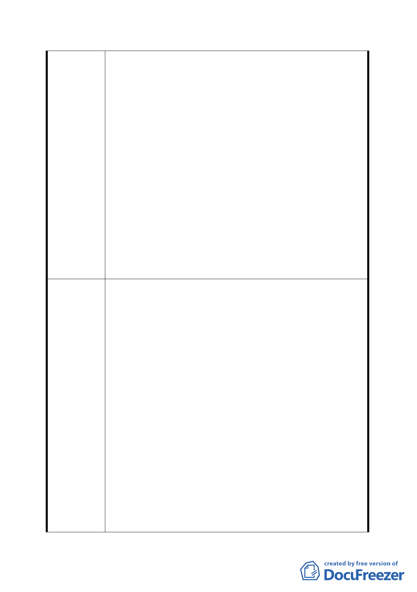

北市北投區第 13 號道路兩側綠地為道路用地(配合社子大橋
新建工程)主要計畫案」，該都市計畫書內私有土地之取得方
式為「徵收」，惟臺北市議會第 10 屆第 7 次定期大會臨時提
案:「關於本市第一期公共設施保留地北投 13 號道路及 138、
139 號綠地工程徵收爭議事，市府應依民國 78 年協議事項辦
理。」市議會並決議提報辦法：「一、市府應依原（78）府工
新字第 338327 函意旨執行，由業主依切結無償提供土地供道
路開發使用及接受徵收移轉登記作業，二者併行辦理。二、
請依註銷公告徵收程序辦理。」，並決議：「送請市府依法辦
理」，臺北市政府依據信賴保護原則、比例原則及施政延續之
一致性原則辦理，遂於 99 年 9 月 10 日與相關土地所有權人
完成切結手續(同案 99 年度社子大橋新建工程地 1 期用地取
得即爰依此方式辦理)，取得該等土地合法使用權。
後續臺北市政府為使計畫與施政前後一致性，將 98 年
度都市計畫書內私有土地之取得方式修訂為「本事業用地開
發採一般徵收為原則，惟如土地所有權人願先行提供使用，
則將併入關渡平原整體開發辦理」，爰依都市計畫法第 27 條
提出此修訂案。
按土地徵收並非國家取得土地所有權之方法，而是一種
最後不得已之手段，因而土地徵收僅僅在無其他法律上或經
濟上得替代之更溫和之方法可資利用時始係合法，若土地徵
收所要實現之目的，得以其他較輕微侵害財產權人之方法
時，例如經由私法買賣契約、以公有土地互易可取得土地之
利用，或以物之負擔或行政契約、聯合開發捐贈方式可代替
土地徵收等等，則土地徵收欠缺必要性，自為法所不許。
需用土地人應體認徵收係取得土地之『最後手段』而非
『優先手段』，参與協議之人員，應不厭其煩予以溝通交涉，
建議辦法
殊不得以協議購地曠日費時，以徒具形式開會，虛構故事，
始得因土地徵收而對人民受憲法保障之財產權嚴重侵害之損
害減至最輕。
案經檢討，建議修訂說明理由如下：工程用地使取得主
要在能使施工順利並顧及民眾權益，北市府重新衡量用地取
得方式不會影響原徵收目的之達成，且係為公益考量與私益
得以兼顧。
1.本案土地不論徵收所有權或切結無償提供土地，均為取得
道路公共設施用地，依行政程序法第 7 條行政行為應依「有
多種同樣能達成目的之方法時，應選擇對人民權益損害最
少者。」原則為之，以免行政行為過度，方能符合土地徵
-5-